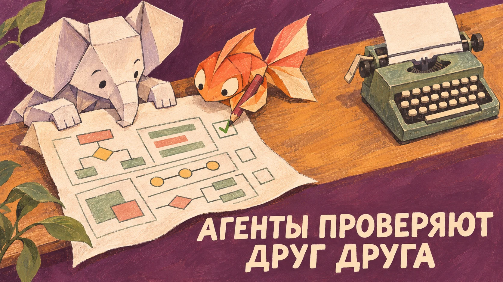

Новости Google и Google DeepMind, где компания выступает непосредственным участником события.
22 материалов в редакционной подборке
Публикации
 13 ноября 2026 · Новости ИИ
13 ноября 2026 · Новости ИИGoogle выпустила Gemini 4 Hydrogen даже для бесплатных пользователей
Google выпустила Gemini 4 Hydrogen для программирования и ИИ-агентов. В бесплатном Gemini модель подключается автоматически; разработчикам доступны API и работа с Orchestrator.
 13 ноября 2026 · Новости ИИ
13 ноября 2026 · Новости ИИGoogle запустила Gemini в Apple CarPlay — теперь почту можно разбирать за рулём
Google начала мировой поэтапный запуск Gemini Live для Apple CarPlay: голосовые беседы, чтение и пересказ писем Gmail, доступ к календарю и продолжение разговора между iPhone и автомобилем. Для начала нужна актуальная версия Gemini на iPhone.
 12 ноября 2026 · Новости ИИ
12 ноября 2026 · Новости ИИGoogle испытала Gemini Robotics 2.5 на заводах Mercedes-Benz: 96% удачных операций
Google DeepMind представила Gemini Robotics 2.5 — модель для управления роботами. На заводах Mercedes-Benz гуманоид Apollo 2 от Apptronik сортировал металлические детали с заявленной успешностью 96%; компания также сообщила об улучшениях в лабораторных задачах.
 12 ноября 2026 · Новости ИИ
12 ноября 2026 · Новости ИИGoogle представила Gemini для больниц: ИИ разберёт медкарты и страховки
Google представила Gemini for healthcare — ИИ-агента для больниц и страховых компаний. Система собирает историю болезни из медицинских систем и готовит документы для страховых согласований и обжалований. В США идёт предварительный запуск с медицинскими партнёрами.
 12 ноября 2026 · Новости ИИ
12 ноября 2026 · Новости ИИAdobe научила Photoshop менять ракурс, а Premiere — генерировать видео
Adobe представила новые ИИ-инструменты для Photoshop, Premiere и Firefly: изменение ракурса и композиции изображений, генерацию видео и звука на монтажной дорожке, агентные творческие инструменты и планы интеграции с Google и Microsoft. Часть возможностей находится в бета-версии, интеграция сторонних агентов ожидается в 2027 году.
 10 ноября 2026 · Новости ИИ
10 ноября 2026 · Новости ИИGoogle показала два новых TPU: один для секретов, другой вдвое мощнее
Google анонсировала TPU 8tx с аппаратной защитой конфиденциальных вычислений и TPU 8i Max с удвоенной относительно TPU 8i вычислительной мощностью и пропускной способностью памяти. Сроки доступности пока не названы.

9 ноября 2026 · Новости ИИGoogle представила Elephant-Goldfish: ИИ-агенты проверяют друг друга перед написанием кода
Google обновила Elephant-Goldfish Model (EGM): один ИИ-агент держит контекст проекта, а независимые рецензенты с чистым контекстом проверяют спецификацию до написания кода; версия 0.1.1 расширила проверки и экспериментальную совместимость.
 7 ноября 2026 · Новости ИИ
7 ноября 2026 · Новости ИИGoogle выпустила Gemini Omni 1.2 Flash: 15 секунд видео и правки в переписке
Google DeepMind выпустила Gemini Omni 1.2 Flash для создания 3–15-секундных видеороликов и многошаговых правок в диалоге. Генерация 720p через API стоит $0,07 за секунду; доступ зависит от сервиса и тарифа.
 3 ноября 2026 · Новости ИИ
3 ноября 2026 · Новости ИИOpenAI, Google, Microsoft и Anthropic разрешат сайтам запрещать обучение ИИ
OpenAI, Google, Microsoft и Anthropic договорились поддерживать единый способ отказа от использования материалов сайтов для обучения нейросетей. Владельцам сайтов больше не придётся составлять отдельные запреты для каждой из этих компаний, когда все они внедрят новый механизм.
 2 ноября 2026 · ИИ, ты чего творишь?
2 ноября 2026 · ИИ, ты чего творишь?Google отправила ИИ в космос. Нейросеть ответила с орбиты!
Первое задание для нейросети, которую Google отправила в космос, оказалось неожиданно литературным: написать хокку о своём пребывании на орбите. Инженеры передали запрос с Земли, модель Gemma 4 сочинила трёхстишие, а экспериментальный спутник Project Suncatcher отправил ответ обратно, пролетая над
 30 октября 2026 · Новости ИИ
30 октября 2026 · Новости ИИGemini теперь редактирует PDF и таблицы прямо в чате
29 октября Google запустила встроенный редактор файлов в Gemini. Он позволяет создавать, просматривать и изменять PDF, документы, таблицы и презентации, не покидая чат. Работает это довольно просто. Допустим, у вас есть фотографии рукописных конспектов. Просите Gemini превратить
 29 октября 2026 · Новости ИИ
29 октября 2026 · Новости ИИGoogle открыла «мозг» для роботов. Теперь они могут работать командой
Робот наливает жидкость. Как ему понять, что пора остановиться? А если он не справился с заданием — кто заметит ошибку? Google предлагает поручить это искусственному интеллекту. 27 октября компания открыла публичный предварительный доступ к Gemini Robotics Embodied Reasoning 2
 29 октября 2026 · Новости ИИ
29 октября 2026 · Новости ИИGoogle обошла OpenAI и Anthropic! Gemini 4 Carbon заняла первое место среди ИИ!
Всего через две недели после Gemini 4 Argon компания Google представила следующую флагманскую модель — Gemini 4 Carbon. И сразу вышла на первое место в независимом рейтинге Artificial Analysis Intelligence Index. Carbon набрала 59 баллов в обновлённом рейтинге v5, обойдя
 28 октября 2026 · Новости ИИ
28 октября 2026 · Новости ИИGoogle Genie 4 создаёт целые миры. Меняйте погоду и разговаривайте с персонажами!
Летишь верхом на драконе между горными вершинами. Вокруг ревут другие драконы, свистит ветер, хлопают огромные крылья. И всё это создаёт нейросеть прямо во время движения. Так выглядит одна из демонстраций Genie 4 — новой модели Google DeepMind, представленной 27 октября. Её
 22 октября 2026 · Новости ИИ
22 октября 2026 · Новости ИИGoogle запустила защищённые ИИ-серверы на NVIDIA Blackwell в 36 зонах
Когда компания запускает нейросеть в облаке, её данные попадают на чужое оборудование. Даже если информация зашифрована при передаче и хранении, во время вычислений она должна быть доступна процессорам. Google предлагает защитить и этот этап. 21 октября 2026 года Google Cloud
 22 октября 2026 · Новости ИИ
22 октября 2026 · Новости ИИGoogle будет продавать модели OpenAI вместе со своими Gemini
Google и OpenAI договорились о сотрудничестве, которое ещё недавно выглядело бы довольно странно: Google начнёт продавать корпоративным клиентам модели своего прямого конкурента. 21 октября компании объявили, что передовые модели OpenAI и инструменты Codex станут доступны через
 21 октября 2026 · Новости ИИ
21 октября 2026 · Новости ИИGoogle подключила автомобильный Gemini к личным данным
Название автомойки забыли, адрес тоже. Осталась только фотография, сделанная на прошлой неделе. Обычному навигатору с таким набором сведений особенно не разгуляться. А вот Gemini, по задумке Google, сможет найти нужное место и проложить к нему маршрут. 20 октября компания начала
 21 октября 2026 · Новости ИИ
21 октября 2026 · Новости ИИGoogle открыла проект ИИ-процессора для часов и датчиков. Цель — всего 10 милливатт
Умные часы могут следить за происходящим вокруг, распознавать звуки и обрабатывать данные с датчиков. Но чем больше такой работы выполняет ИИ, тем быстрее садится батарея. Отправлять всё на сервер тоже неудобно: требуется интернет, появляется задержка, а личные данные покидают
 20 октября 2026 · Новости ИИ
20 октября 2026 · Новости ИИGoogle научила Gemini Notebook показывать план видео до его создания
Одна из неприятных особенностей генеративного ИИ: результат иногда получается вполне красивым, только рассказывает совсем не о том и совсем не в том порядке. Приходится объяснять машине, что она сделала не так, и запускать генерацию
 20 октября 2026 · Новости ИИ
20 октября 2026 · Новости ИИGoogle выпустила инструмент для запуска ИИ непосредственно на устройствах
Google представила LiteRT Tensor API — инструмент, позволяющий разработчикам создавать и оптимизировать нейросетевые модели для работы непосредственно на устройствах. Главное отличие: один программный код можно адаптировать для разных процессоров и видеоускорителей без полной
 19 октября 2026 · Новости ИИ
19 октября 2026 · Новости ИИGoogle делает ссылки в ответах ИИ заметнее. А что, так можно было?
Google обновляет AI Mode и AI Overviews: ссылки внутри ответов станут заметнее, а новостные материалы получат более выразительные блоки. Но сколько переходов это принесёт сайтам — пока неизвестно.
 14 октября 2026 · Новости ИИ
14 октября 2026 · Новости ИИGoogle выпустила Gemini 4 Argon — новую флагманскую модель
13 октября Google открыла доступ к Gemini 4 Argon — модели для сложных многоэтапных задач, программирования, исследований и автономной работы.